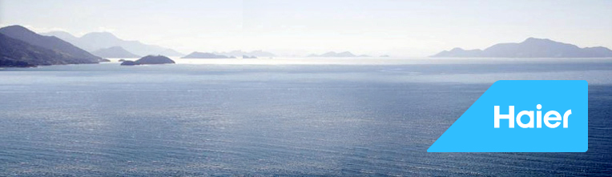

海尔进入海尔网站
四个品牌信仰
创新：海尔秉承锐意进取的海尔文化，不拘泥于现有的家电行业的产品与服务形式，在工作中不断求新求变，积极拓展业务新领域，开辟现代生活解决方案的新思路、新技术、新产品、新服务，引领现代生活方式的新潮流，以创新独到的方式全面优化生活和环境质量。
可持续发展：海尔将秉持一贯的社会责任意识，在创意、制造、服务、物流、回收等环节坚持践行绿色理念，积极引领消费者、 合作伙伴乃至各行各业共同承担对环境的保护与关爱， 为社会长久发展奠定良好基础。
客户至上：海尔深刻洞察人们对现代生活的需求：优质生活和优质生活环境。所有的海尔人和海尔的合作伙伴都以真诚的 态度，在研发、采购、生产、物流、服务 等每一个细节中倾心而为，发挥全部潜力和创造力，尽力满足客户的需求， 实现以客户为中心的创新。
缜密的解决方案：海尔不仅充分理解消费者的生活需要，而且深入考虑对环境的综合影响。海尔积极拓展与家居生活相关的 业务领域，对各产品、服务、居家环境、网络等进行全面整合，为消费者量身定制系统化的现代生活解决方案，创造更丰富的生活体验和更优质的生活环境。
进入海尔网站